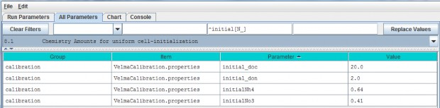
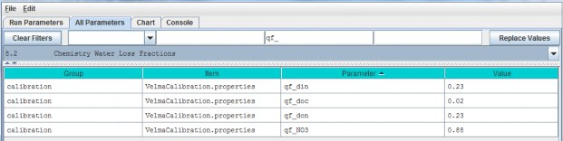

Chemistry Pools (Dissolved C and N) (link to All Parameters TOC) VELMA simulates ecosysteminputs, outputs and internal cycling of four pools of dissolved nitrogen and carbon in soil: ammonium(NH4), nitrate (NO3), dissolved organic nitrogen (DON)
and dissolved organic carbon (DOC).
Sections 8.1 and 8.2, below, describe the specification of initial pools and calibration of parameterscontrolling leaching losses to streams. Subsequent sections describe additional processes affecting inputs andoutputs from these dissolved C and N pools.
8.1 - Chemistry Amounts for uniform cell-initialization
Initial soil pools (g N / m2 or g C / m2) of NH4, NO3, DON and DOC can be viewed and specified byselecting "8.1 Chemistry Amounts for uniform cell-initialization" from the All Parameters drop-down menu. Thevalues specified should represent the sum of all 4 soil layers (total soil column) averaged across thewatershed.

Parameter Definitions
| Parameter Name | Parameter Description |
|---|---|
| initial_doc | Initial DOC pool amount (per cell) in gC/m2. |
| initial_don | Initial DON pool amount(per cell) in gN/m2. |
| initial_Nh4 | Initial NH4 pool amount (per cell) in gN/m2. |
| initial_No3Initial | NO3 pool amount (per cell) in gN/m2. |
Calibration Notes
On day 1 of a simulation, VELMA will use the specified parameter values to calculate the fraction of eachnutrient's total pool to allocate to each of the four soil layers. This is done uniformly for all grid cells onday 1.
With some effort, VELMA can be calibrated to simulate spatial variability in C, N, H2O pools and fluxes.With a well-calibrated parameter set, initially uniform nutrient pool values will begin to adjust and, after asufficient spin-up time, more closely match spatial and temporal patterns of observed nutrient pools (McKane2014).
Section 7.0 describes methods for setting up an appropriate spin-up period for allowing initialized soil moisturelevels to adjust to a site's biophysical conditions. The same spin-up method applies for all model pools andfluxes, including stream chemistry.
Alternatively, you can use a more advanced method for specifying initial nutrient pool values that consider spatial variability in soil types, and cover species type and age. Details can be found in Appendix 3: Creating Initial ASCII Grid Chemistry Spatial DataPools.
References
The User Manual package includes slides for a seminar describing the effectiveness of riparian buffers for protecting water quality in the Chesapeake Bay.
Filename: McKane_ORD GI webinar_7-30-14 Final.pptx
Folder location: VELMA Model\Supporting Documents\VELMA Pubs & Talks
8.2 - Chemistry Water Loss Fractions
In VELMA, transport of dissolved nutrients within the soil column, and ultimately to the stream, is a function ofvertical and lateral water drainage, the size of the nutrient pool, and a specified loss fraction (qf)parameter.
The nutrient loss fraction parameters can be viewed and specified by selecting "8.2 Chemistry Water LossFractions" from the All Parameters drop-down menu.

Parameter Definitions
| Parameter Name | Parameter Description |
|---|---|
| qf_din | NH4 loss due to horizontal and vertical water flow range [0.0 1.0]. |
| qf_doc | DOC loss due tohorizontal and vertical water flow range [0.0 1.0]. |
| qf_don | DON loss due to horizontal and vertical waterflow range [0.0 1.0]. |
| qf_NO3 | NO3 loss due to horizontal and vertical water flow range [0.0 1.0]. |
Calibration Notes
The "qf" parameters for specifying nutrient loss fractions are very important for achieving a good fit betweensimulated and observed stream chemistry data (Abdelnour et al. 2013).
However, when you are calibrating these and any other parameters, keep in mind that it is fairly easy to specifyqf values that provide a good fit between simulated and observed stream chemistry data, even when the source soil nutrient pools are poorly calibrated (too large or too small.
Achieving a well-calibrated ecosystem model is an iterative process, requiring numerous simulation runsuntil a set of parameters values is identified that simultaneously provides a good fit between simulated andobserved data for plants, soils and streams, i.e., all C, N and H2O pools and fluxes forwhich good quality observed data are available (recognizing that complete validation is an ideal never reached).